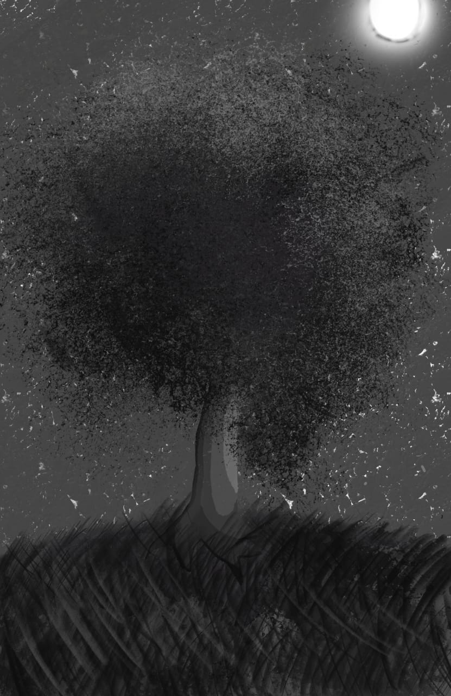
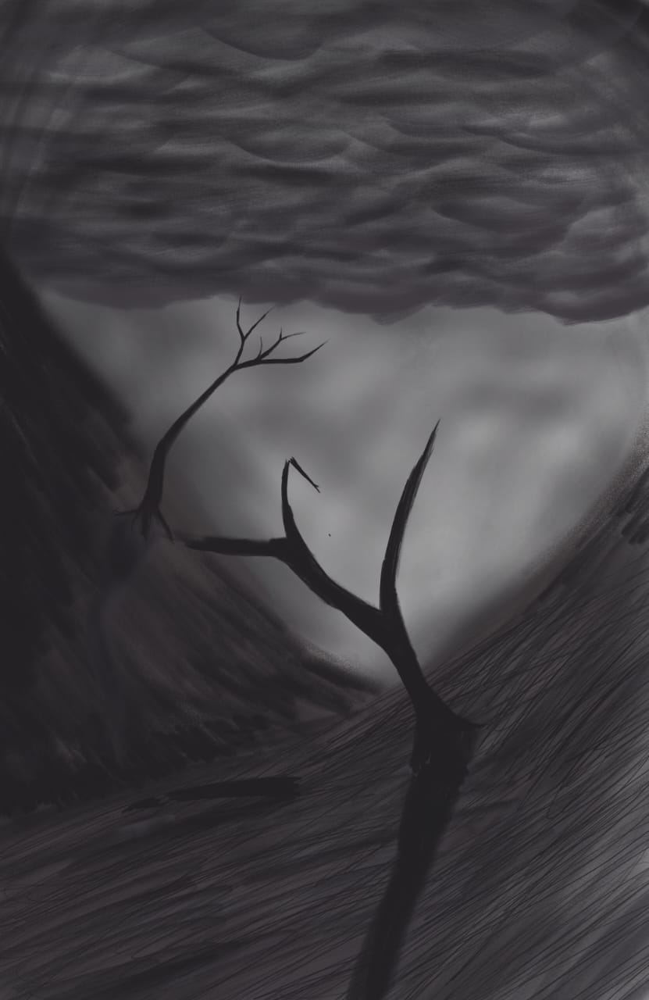
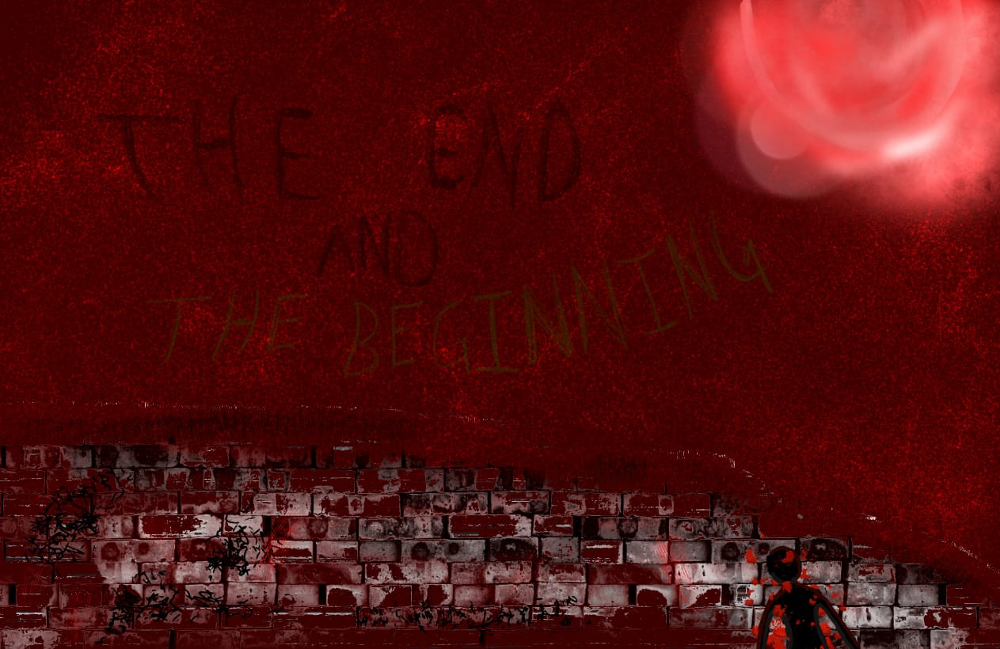
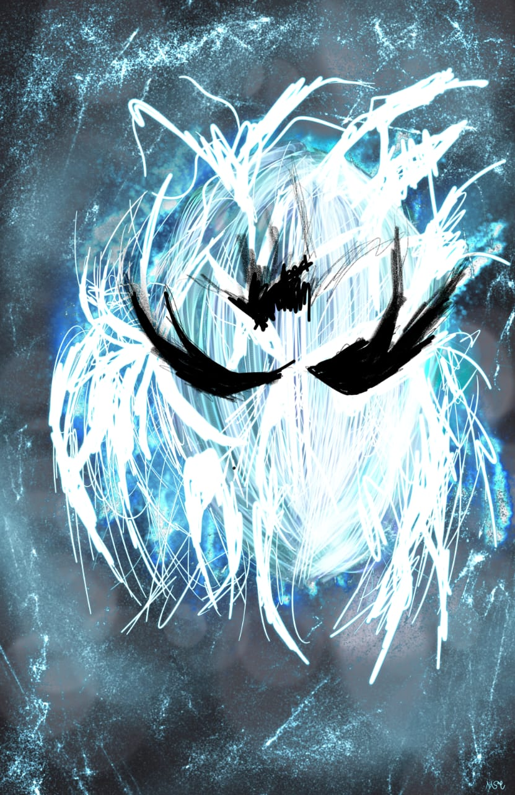

This is a digital painting of a lone tree in a serene landscape. It represents solitude and the beauty of nature.

This digital artwork depicts the aftermath of a storm, with a broken tree and scattered debris. It symbolizes resilience and recovery.

This piece portrays the end of a journey, with a sunset over a distant horizon. It evokes feelings of closure and reflection.

This artwork features a celestial being surrounded by cosmic elements. It represents the mysteries of the universe and the beauty of the unknown.